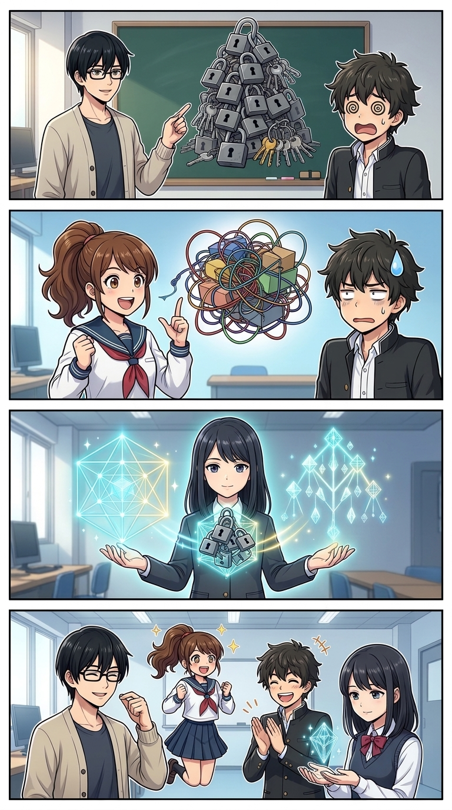
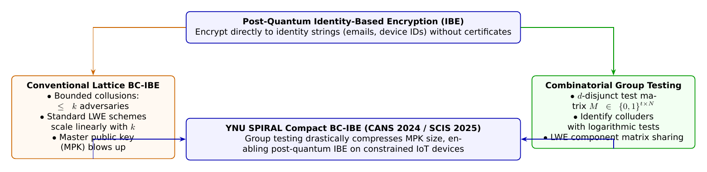

🎨 4コマ漫画挿絵（文字なし）
AI高解像度生成
▲ 【挿絵】青葉台高校 情報科学部＆帝都科学大学サイバーディフェンス・ラボでの実践シーン
💬 4コマ漫画キャラクターセリフ (Story Dialogue Script)
日・英バイリンガル (JA / EN)[悠真]「でも耐量子（格子暗号）で完全なIBEを作ろうとすると、公開鍵やパラメータが爆発的に巨大化してしまうんだ」
[Yuma] "Indeed, but constructing full lattice-based post-quantum IBE blows up the public parameters astronomically!"
[結衣]「従来方式でも共謀数 $k$ に比例してマスター公開鍵が肥大化し、IoTや軽量デバイスには載りませんでした……」
[Yui] "Even so, conventional schemes scaled linearly with $k$, remaining too heavy for IoT microcontrollers..."
[葵]「何十人もの結託者を、たった数個の数理テストパターンで一網打尽に封じ込めるなんて、魔法のパズルみたい！」
[Aoi] "Bounding dozens of colluders with just a handful of mathematical test patterns is pure combinatorial magic!"
[全員]「数理のコンパクト化が、未来のサイバーセキュリティを手のひらに届ける！」
[All] "Mathematical compaction brings post-quantum security right into the palm of our hands!"
📖 小説本文
「相手の公開鍵証明書（X.509）をCAからダウンロードして、失効リスト（CRL）を確認して……なんて面倒な手続き、全部すっ飛ばせないの？」
橘葵が頬杖をつきながら呟いた。
「葵先輩、それこそが1984年にアディ・シャミア（Adi Shamir）が夢見た**『IDベース暗号（Identity-Based Encryption: IBE）』**の神髄ですよ」
白石結衣が微笑みながらノートPCの画面を向けた。 「IBEでは、受信者のメールアドレス `alice@ynu.ac.jp` や社員番号といった文字列そのものが公開鍵になります。送信者は証明書を一切検証することなく暗号文を送ることができ、受信者は鍵生成センタ（PKG: Private Key Generator）から自分のIDに対応した秘密鍵を受け取るだけで復号できます」
「それ、最高じゃん！」葵が身を乗り出す。「全人類がIBEを使えば、PKI（公開鍵基盤）の複雑なトラブルから解放されるよ！」
「ところが、ポスト量子（耐量子）の世界になると、途端に分厚い壁が立ちはだかるんだ」
大学の講義を終えて駆けつけた城崎悠真が、黒板に格子暗号のLWE（Learning With Errors）問題を書き連ねた。 「従来のIBEはペアリング写像（楕円曲線の双線形写像）に依存していたけれど、ペアリングはショアの量子アルゴリズムで完全に破られてしまう。そこで格子暗号に基づく耐量子IBE（LWEベース）が研究されてきた。でも、完全な格子IBEはトラップドア生成行列や基底のサイズが巨大で、計算コストも膨大なんだ」
「そこで登場したのが、**有界共謀耐性（Bounded-Collusion Resistance）**という実用的な割り切りなんだね」神崎蓮が指をパチンと鳴らした。
「そう」悠真が頷く。「現実の社内ネットワークや組織において、100万人全員が結託して暗号系を攻撃することはまず考えにくい。せいぜい『悪意のある攻撃者が最大 $k$ 人の不正ユーザーの秘密鍵を買い集めて結託（Collusion）する』というシナリオを防げれば十分なケースが多い。これが**BC-IBE（Bounded-Collusion IBE）**だ。しかし……従来のBC-IBE方式でも、結託許容数 $k$ を大きくすると、マスター公開鍵（MPK）のサイズが $O(k)$ またはそれ以上に急拡大してしまうという致命的な弱点があった」
「そのボトルネックを根底から覆したのが、横浜国立大学SPIRALの佐藤慎悟准教授と四方順司教授の国際会議論文（CANS 2024 / SCIS 2025）なんだ」
---
📊 セキュリティ構造図解 (TikZ LuaLaTeX生成)
国家安全基準・工学図解
▲ 【技術構造図】IPAデジタルスキル標準・国際規格に準拠した仕組みのモデル化